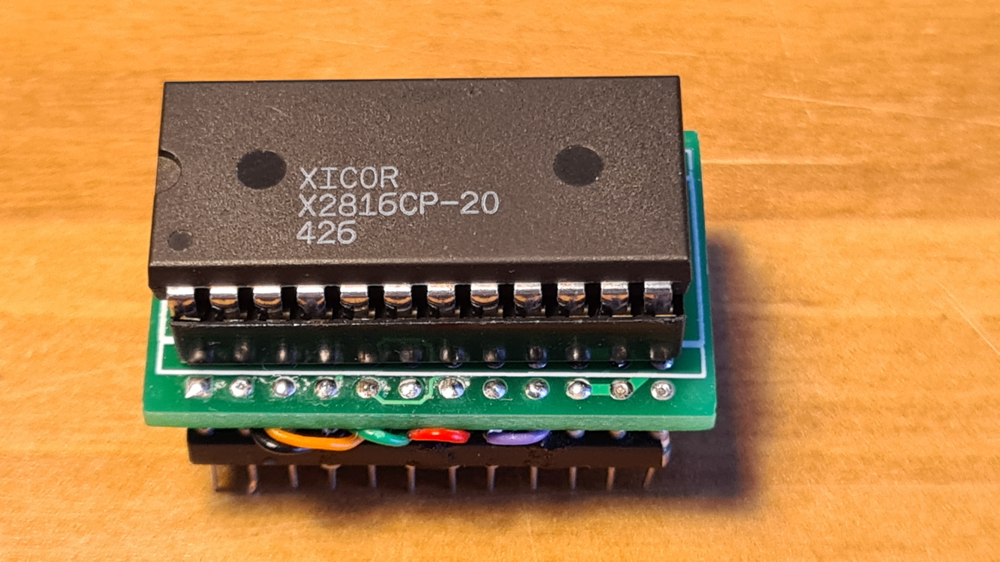
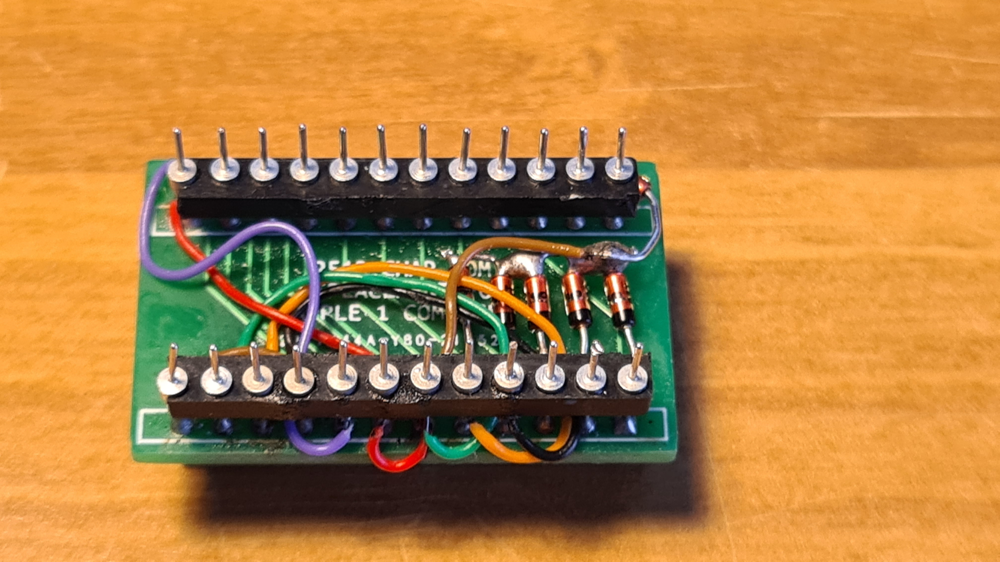

APPLE-1 2513 CHARACTER ROM Replacement
 Intended for Apple-1 computer only. Prototype tested with AMD 2716 EPROM and XICOR X2816C-20 EPROM.
Notes:
- All Diodes are small signal Schottky BAT85 or equivalent and they are already included in the GERBER file below.
- Diodes are needed to recondition the signals with negative voltages coming out (by design a -12V pulldown resistor is required) from Apple-1's IC 2519.
- Works either with original 2519 or Replacement.
- Use *PROM with 450 ns Access Time or less.
Documents hosted here:
--- EasyEDA project [json]
--- Schematic [png]
--- Gerber for PCB 2513 Replacement [zip]
--- Binary 2 kBytes file for 2716/2816 [bin]
Small DEMO video [mp4]
This work is licensed under CC BY 4.0